𝖂𝖊𝖑𝖈𝖔𝖒𝖊 𝖙𝖔 𝖙𝖍𝖊 «𝔑𝔬𝔱𝔉𝔩𝔬𝔬𝔡ℌ𝔖ℜ» 𝖋𝖑𝖔𝖔𝖉!
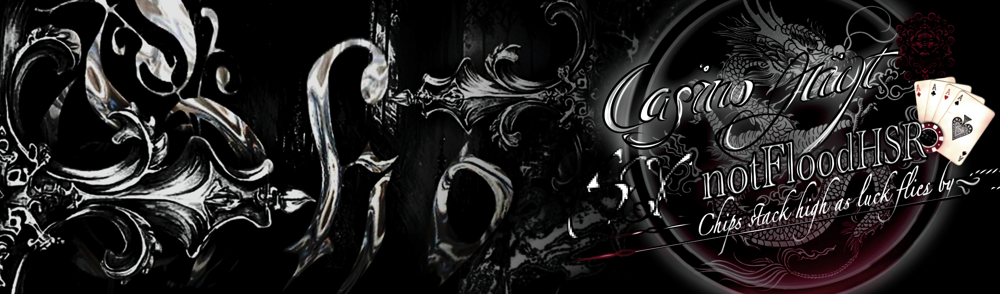
Попытаешь судьбу?)) https://hsrflood.netlify.app/
Советую ознакомиться с навигацией. Там находятся все пункты, которые могут заинтересовать вас.
Просто выбирайте роль, пишите в бот её, юз, добавьте
полную дату рождения цифрами и вступайте к нам. У нас довольно большой коллектив, так что и интересных личностей, тем для дискуссий много.
Также в нашем флуде присутствует система инициалов (спасибо бывшему Бутхиллу). Желающие могут поставить их в свой ник/куда пожелают)
#𝑵𝑭𝑯.
#𝑵𝑭
Welcome to the
«NotFlood: HSR,
wuwa&genshin»
flood rules!
Знаю, путник, что чтение длинных свитков может утомить твой дух. Мне было столь же непросто их начертать. Однако сии слова необходимы, дабы в будущем между нами не возникло недопонимания. Прочти их внимательно — это сбережет покой нашего общего дома.
Общие пункты:
愛 Принятие условий
Становясь частью нашего проекта, Вы подтверждаете, что ознакомились с установленными правилами и принимаете их, обязуясь следовать им. Если Ваше сердце не согласно с нашими порядками — воздержитесь от подачи заявки.
愛 Предложения и изменения
Мы открыты к мудрым мыслям: если у Вас есть идеи по улучшению правил, направляйте их сюда: @notfloodsbot. Помните: администрация оставляет за собой право вносить правки в законы и систему наказаний, а также отклонять подозрительные заявки без объяснения причин.
愛 Заявка
Доказательств возраста документами мы не требуем, веря слову каждого. При подаче заявки указывайте полную дату рождения цифрами в формате: дд.мм.гггг.
«Соблюдение правил — это мост к нашему общему процветанию».
1) Оскорбления, контент 18+, общение, чистка, норма, исключения, пощада.
秩序 (Правила сообщества):
愛 1. Оскорбления
Дозволены лишь в шутливой форме, подобно легкому ветерку. За грубость и реальные обиды виновные будут преданы наказанию.
愛 2. Контент 18+
Запрещены сцены расчленения и жестокого обращения. Остальной контент категории 18+ должен быть скрыт «блюром» (размытием) и содержать предупреждение (TW).
愛 3. Чистота разума
В нашем обществе не приветствуется упадок мысли. Спам, вызывающий неприязнь, беременные персонажи в сомнительном контексте, грубые высказывания и неуместные гиф/стикеры (различного рода брейнрот) — путь к предупреждению или изгнанию за спам.
愛 4. Обряд очищения (Чистка)
Раз в неделю мы обновляем наши ряды:
- ХСР: каждое воскресенье в 20:00 (по киевскому).
- WuWa & Genshin: каждое воскресенье в 21:00 (по киевскому).
愛 5. Путь активности (Норма)
Каждый должен вносить свой вклад в жизнь общины:
- Участники: 100 сообщений.
- Админы-активисты: 600 сообщений.
- Остальные админы: 250 сообщений.
- Итог: Недобор нормы или 5 дней молчания влекут за собой изгнание. 3 предупреждения — и ваш путь у нас завершен.
愛 6. Исключения из правил
Обряд очищения может быть отложен в случае праздников или особых ситуаций в общине. В учебный период (сентябрь-июнь) нормы могут быть пересмотрены согласно общему ритму жизни чата.
愛 7. Милость администрации
Администрация может проявить снисхождение к тем, кто стал душой нашего общества. Оценка заслуг строится на:
- Соблюдении кодекса;
- Создании атмосферы комфорта;
- Уровне усердия и активности;
- Уважении со стороны других членов общины.
«Порядок — основа гармонии. Соблюдайте правила, и путь ваш будет спокоен».
2) Порядок и отдых.
愛 Возрастной порог
К участию допускаются лишь те, чей путь насчитывает не менее 14 зим (лет).
愛 О спаме и гласе
Спам — это излишество, более пяти однотипных или лишенных смысла посланий. «Лесенка» из текста допустима лишь тогда, когда в ней заложена мудрость. Команды — инструмент полезный, но не превращайте беседу в механический шум.
愛 Об отдыхе (Рест)
Каждому путнику нужен покой.
- Условия: Доступно тем, кто пребывает с нами более недели. Можно брать раз в 1.5 месяца на срок до 5 недель.
- Исключения: В особых случаях, при наличии веских причин, рест выдается бессрочно. Новый отдых возможен лишь спустя месяц после завершения предыдущего.
- Запрет: Нельзя уходить на покой за день до обряда очищения (чистки).
愛 Математика нормы для выходящих из отдыха
Поскольку недельная норма составляет 100 сообщений, мы разделили её на дни, дабы каждый был справедлив перед законом после выхода из отдыха. Вышли из реста в:
| День выхода | Необходимая норма сообщений |
| Понедельник | 100 сообщений |
| Вторник | 86 сообщений |
| Среда | 72 сообщения |
| Четверг | 58 сообщений |
| Пятница | 44 сообщения |
| Суббота | 30 сообщений |
| Воскресенье | 16 сообщений |
Мы усердно считали каждое число, чтобы справедливость восторжествовала для каждого, кто вернулся из странствий.
3) О конфликтах и спорах.
愛 Мир и разногласия
Дискуссии — это жизнь нашего общества, однако они должны оставаться в русле благоразумия.
- Границы дозволенного: Ссоры, переходящие в открытые конфликты, недопустимы. Мы ценим обмен мнениями, но если беседа теряет свет и перерастает во тьму вражды — администрация имеет право вмешаться и пресечь беспорядок.
- Искусство спора: Умейте вовремя остановиться. Помните, что истина рождается в уважении, а не в ярости. Тот, кто превращает общение в поле брани, нарушает гармонию нашего общества.
«Спорьте, но не враждуйте; дискутируйте, но не разрушайте созданный комфорт».
4):
愛 А) Калл
愛 Б) Пиар
愛 В) Смена роли (Перевоплощение духа)
愛 Г) Выход (Завершение пути)
愛 Д) Общение во флуде (Искусство беседы)
愛 Э) Прочее (Иные вопросы бытия)
愛 А) Калл
Право на «калл» принадлежит лишь администраторам. Участники могут получить сие право лишь с благословения администрации.
愛 Б) Пиар
Мы поддерживаем творчество: реклама ваших творений и каналов дозволена. Однако пиар чужих обителей (флудов, ролевых) без согласия администрации — путь к предупреждению.
愛 В) Смена роли
Если дух ваш жаждет перемен, вы можете сменить свою роль до пяти раз. Желаете перевоплотиться? Обратитесь к любому из администрации.
愛 Г) Уведомление о выходе
Покидая наш круг, проявите благородство: укажите свою роль и отметьте представителя администрации. Это не долг, а вопрос человечности. Мы идем вам навстречу — будьте добры ответить тем же.
愛 Д) Общение во флуде
Мы свободны обсуждать любые темы, но делайте это с мудростью. Если беседа накаляется, администрация вправе наложить печать молчания на эту тему. За неуважение и переход на личности — наказание неизбежно.
愛 Э) Прочее (Полезные свитки)
1. Казино: Испытайте удачу здесь: notflood.net
2. Летопись проекта: Детали о нас и наших жителях: notflood-project.github.io
3. Общие забавы: Ссылки на чаты для игр (Roblox, Minecraft, Мафия и др.) закреплены в описании нашего дома.
Слово к путнику:
Мы ценим каждого, кто ступил на наш порог. Помните: наш флуд — это живой организм. Без ваших стараний он не расцветет. Интерактивы созданы для того, чтобы вы нашли здесь друзей — не игнорируйте их, если ищете тепла.
Наши правила — не тяжкие оковы, но верный компас, помогающий избежать раздоров. Администрация вершит суд не ради неприязни, а дабы сохранить уют в нашем общем доме.
О приеме новых душ:
При открытии врат первыми входят те, кто забронировал роль. Если же число участников достигнет 50 — набор закроется. В таком случае бот вежливо сообщит вам о том, что нужно забронировать роль до следующего открытия врат.
Будьте людьми в лучших проявлениях ваших — и путь ваш здесь будет светел.
Нарушение правил = словесный пред/варн/мут/бан. Выбор меры наказания происходит на основе тяжести «преступления». На этом всё…
Свежие сплетни и новости
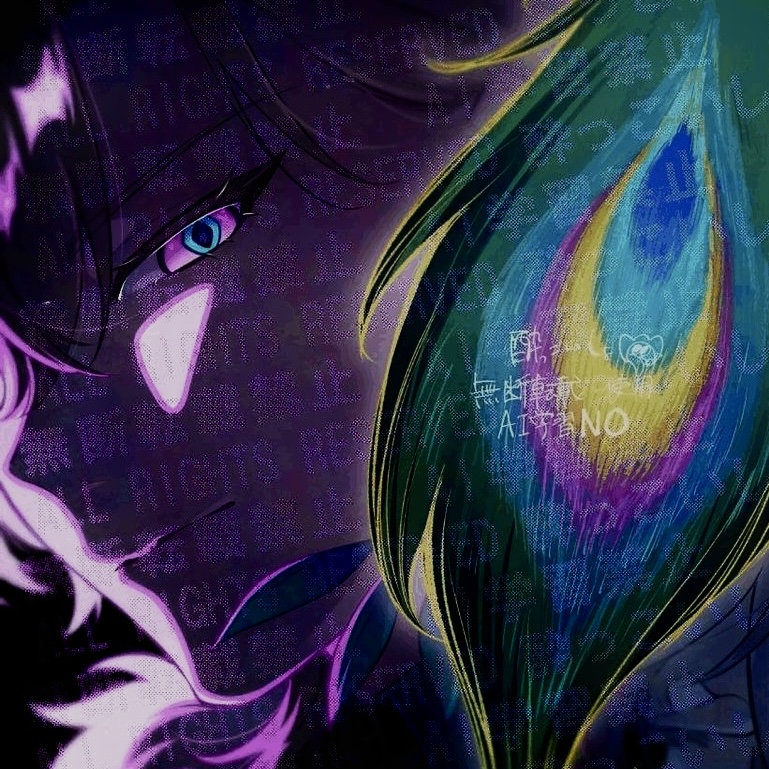
В связи с новогодними праздниками на следующей неделе чистки не будет. Отдыхайте, гринчи и олени, йоулупукки и снегурочки.
С наступающим, грешники. У кого-то НГ ещё будет, у кого-то уже наступил. В общем, празднуйте, спивайтесь, главное — через неделю к нам вернитесь. Желательно живыми. Но мертвыми тоже принимаем, вы даже так от нас не скроетесь...)
Приветствую, грешники. Отныне у нас есть второй чат)) Фд - вува и геншин (фу). Приглашаем новые души к нам. Инфо: @nfWuwaGenshin
Админы снова шалят, хохохо. Предлагаем вашему вниманию казино, разработанное Дань Хэном/Панталоне: http://notflood.runasp.net/ В нем вы сможете делать спины за вирт валюту, получать выиграши и тратить их на плюшки в чатах. Убедитесь сами)
Отныне мы берем в союзники чудесный проект - @Asenshi_Rex.
Развлечения грешников.
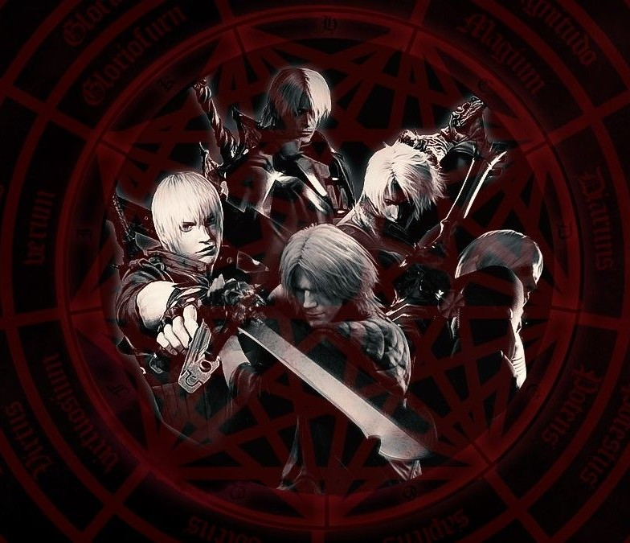
Покерный блеф:
Правила: стартовое количество фишек каждого игрока — 30 (для начала). Каждый игрок по очереди пишет о себе три факта, два из которых ложь. Другие игроки ставят ставки на то, какой факт является правдой. После игрок, написавший факты, озвучивает какой из них является правдой. За ставку на неправду снимаются 3 фишки, за ставку на правду фишки не снимаются с вашего счета. Очки тех кто не угадал переходят к тому кто писал вопрос. Тем, кто сбегает из игры и пропускает свою очередь, снимают по 3 фишки. Давать свой ответ можно лишь ЕДИНОЖДЫ, переписывание и замена не считаются. И так до 3-4 раундов, пока не останется один человек с найбольшим количеством фишек)) Те, у кого фишек 0, вылетают, дальше могут лишь наблюдать за игрой. Ведущим игры является один из администраторов.
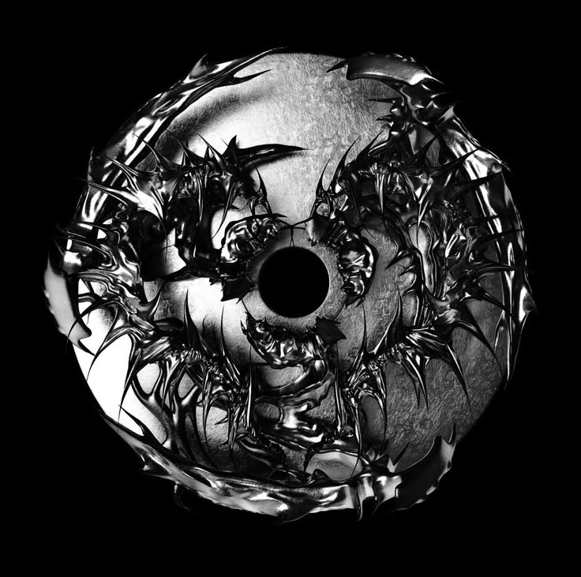
Шпион:
В каждом раунде участники получают карточки, на которых написана локация, либо что-то другое. Один из игроков при этом оказывается шпионом. Он не знает локацию. Его цель угадать локацию, не раскрыв свой статус шпиона. Участники задают друг другу вопросы, касающиеся локации, чтобы раскрыть шпиона. А шпион в свою очередь, должен по этим вопросам догадаться, в какой же локации находятся все участники. Если шпион по вопросам догадался, где находятся участники, то он просто озвучивает место. Если он оказался прав, то он побеждает. Если во время игры участники заподозрили одного в шпионаже, они могут проголосовать против него, чтобы проверить действительно ли он шпион. Если они проголосовали и человек действительно оказался шпионом, то они побеждают. Если же они выбрали не того, то раунд заканчивается и побеждает шпион.
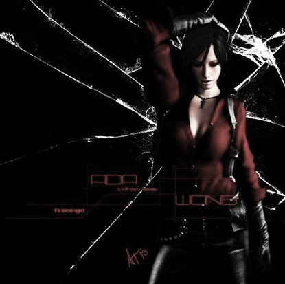
Невеста:
Игроки делятся на:
1. ведущий-рассказчик
2. невеста (только одна)
3. женихи (неограниченное кол-во, все остальные игроки)
Ведущий делит всех игроков на роли, и игра начинается.
Невеста пишет !в лс! ведущему, какой бы она хотела задать вопрос женихам.
Этот вопрос ведущий пишет во флуд, принцы немного думают над ответом и пишут их опять !в лс! ведущему.
Каждый ход невеста избавляется от жениха, чей ответ ей больше всего не понравился,
и так игра будет продолжаться, пока не останется один жених.
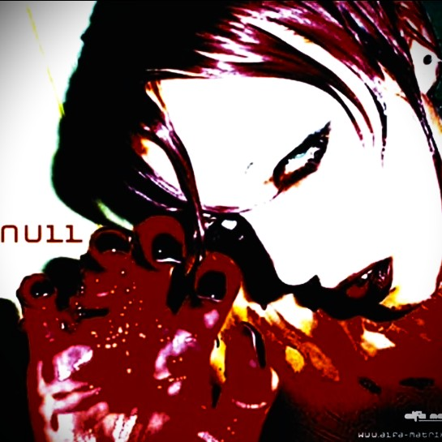
«Две правды и одна ложь»:
Один игрок рассказывает три факта о себе (две правды, одну ложь),
а остальные должны угадать, какое утверждение — ложное, чтобы лучше узнать друг друга
в непринужденной обстановке. Это отличный способ начать знакомство,
ведь ложь должна быть правдоподобной, чтобы ее было сложно отличить от реальных фактов.
Как играть:
Подготовьтесь: Каждый участник придумывает три утверждения о себе: два правдивых и одно ложное.
Представляйтесь: По очереди игроки зачитывают свои три утверждения (не обязательно в порядке правда-правда-ложь).
Угадывайте: Остальные участники обсуждают и пытаются определить, какая из историй — вымысел.
Раскрывайте карты: Игрок, который рассказывал истории, раскрывает, где была ложь, а где правда.
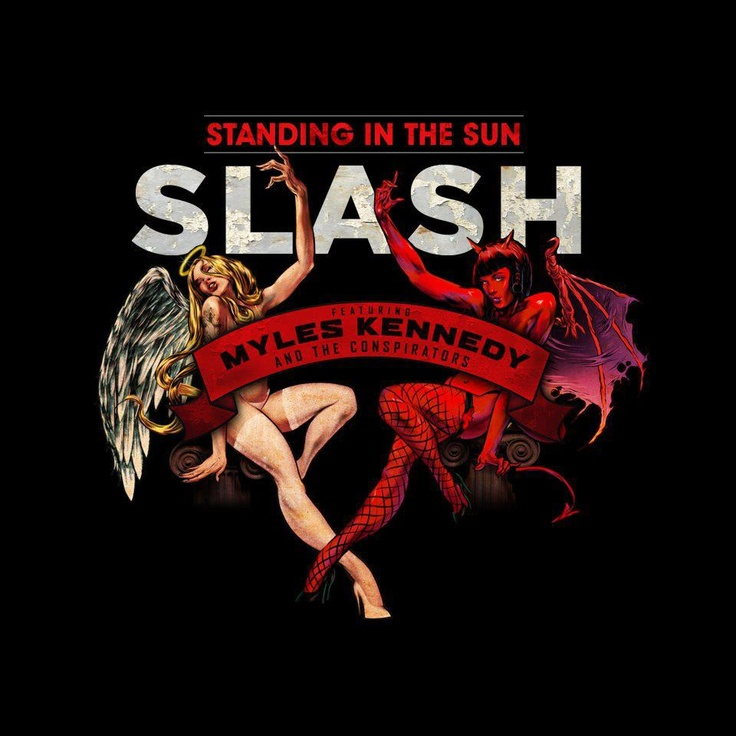
Казино:
У наших флудов есть эксклюзивное казино, в котором за вирт валюту можно купить различные радости.
Среди них
Избавление от чистки
Снятие варна
Получение награды
Звание в ник
Архив безумия.
Наши самые сладостные деяния)))
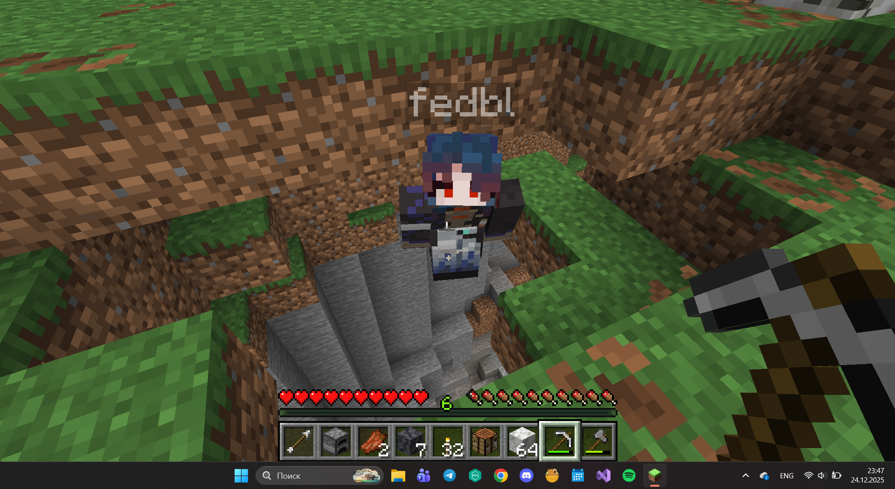
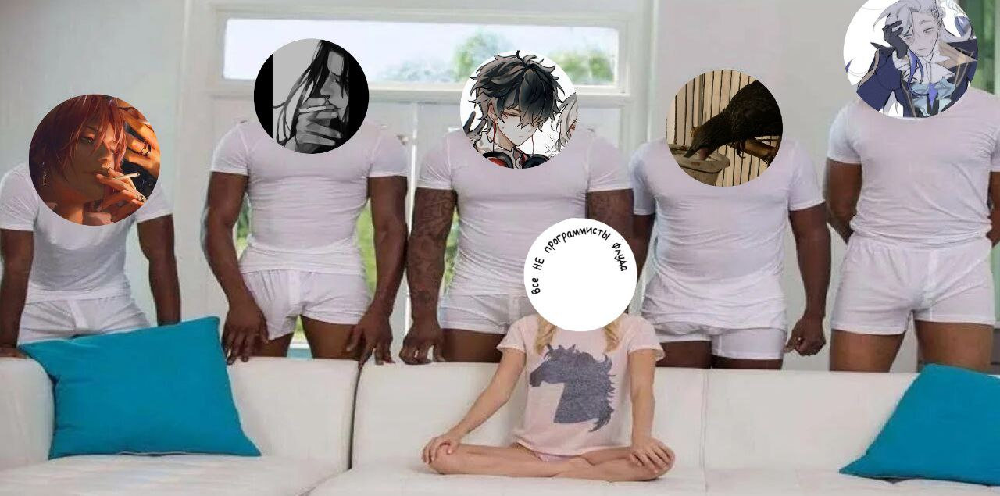
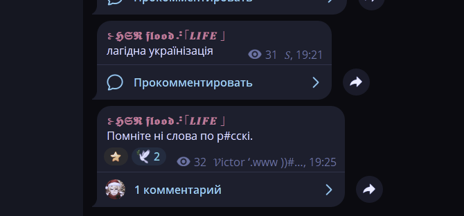
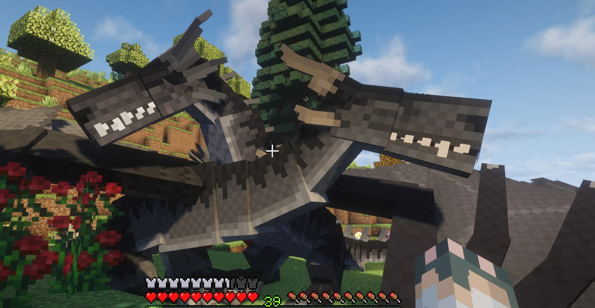
Судоку
Отдыхаешь? Разомни мозги. Ошибки не прощаются.
Звучание душ.
Выберите песню...
Послания грешников
Георгина
Я самая пиздатая
Март 7
50 метров от вас. Приходите, я скучаю 🌹
Дань Хэн
главный фанат Блэйда и номер один флуда
Мидей
Ваша любимая ведьма)
Эон Лун
Самый ленивый, спокойный и справедливый человек.
Кирена
Просто добрая душа
Река (Сансет)
Сансет есть, а вроде нет. Хуй пойми - какой ответ.
Конференция грешников
История...
Всё началось с того, что у нас был флуд по бсд, в который меня затянули. Только я (Авантюрин), Дань Хэн, Блэйд и прочие участники администрации того флуда, которого уже нету. Мы старались над ним, но фд уже загибался, а с ним и общение. Отдачи не было. Тянули до последнего, остальные админы и владельцы сбежали. В общем, мы не выдержали и закрыли его. Тогда я в рандомный летний день накидала инфо нового будущего флуда по хср, кинула в админ чат, Блэйд с Даней оценили - и мы быстро принялись за работу. После подтянули и других крутых ребят в админ состав. Что сказать... Наш проект стал большим доволько быстро, остаётся таковым и сейчас. Регулярный движ, интерактивы, приличный оборот участников делают своё дело. Правила вообще не строгие, обсуждать можно любые темы, а админы выделяются нестандартным подходом и нелюбовью к банальности и шаблонности флудов. Фд хср/вувы/геншина в наших чатах особой роли не играют, они скорее для красоты. Мы никогда не делали акцент на подобном, в первую очередь данный проект - группа для общения. Наверное поэтому у нас есть сайт, а не просто телеграм чат, можно делить одну роль на двоих, играть в покер, обсуждать даже самые трешовые, странные темы и не бояться осуждения, периодами нарушать правила... Ведь все мы здесь свои. Видела я другие флуды, в которых можно "обсуждать любые темы", "не вести себя так, словно ты толерашка" и т.п., но на деле в них ВСЕГДА царил хаос и неприятная, токсичная атмосфера. У нас же беспорядок переходит в упорядоченную небанальность, без токсичности, ахаха. Так что весело живем двумя чатами, в первом стабильно около 50 участиков, часто даже больше, во втором - 20+. Актив тоже очень высок)
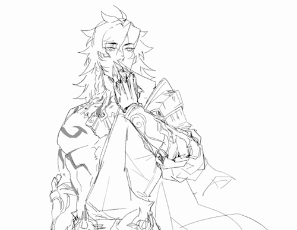